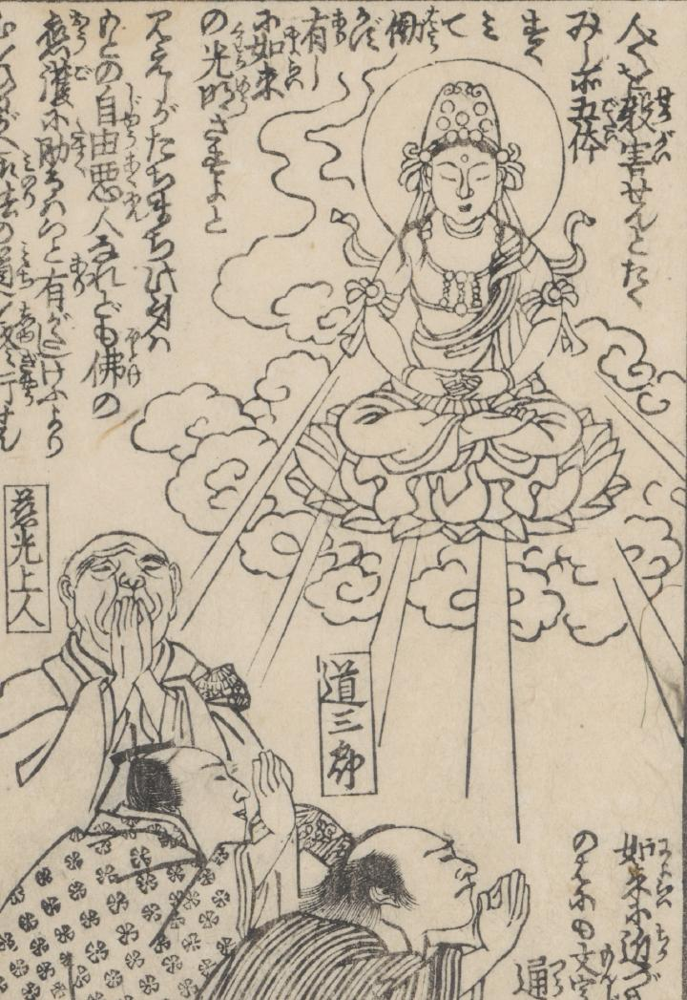

女中「お竹」が、雲に乗り光を放つ大日如来に変じ、人々は手を合わせてそれを拝んでいる。
著作者：一勇斎國芳／出典：親書誌：U426_nichibunken_0430：応現於竹ものかたり／日付：2016／資源識別子：U426_nichibunken_0430_0002_0000
Copyright (c)2010- International Research Center for Japanese Studies, Kyoto, Japan. All rights reserved.